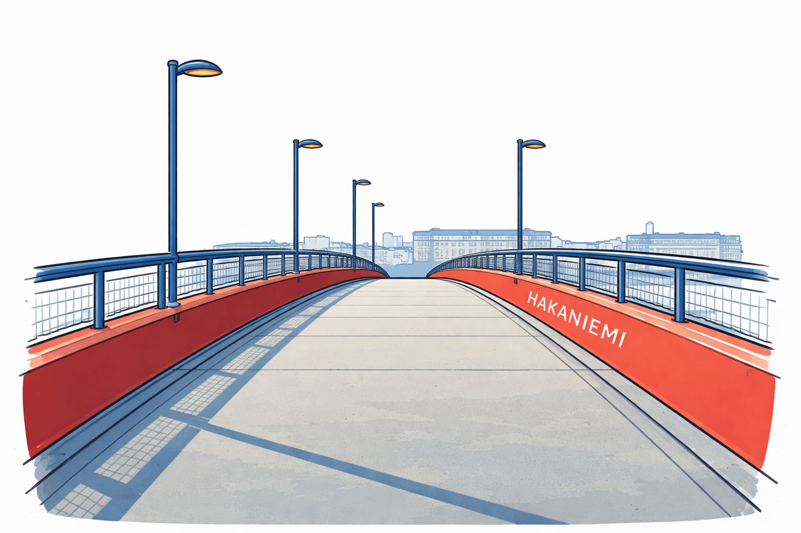
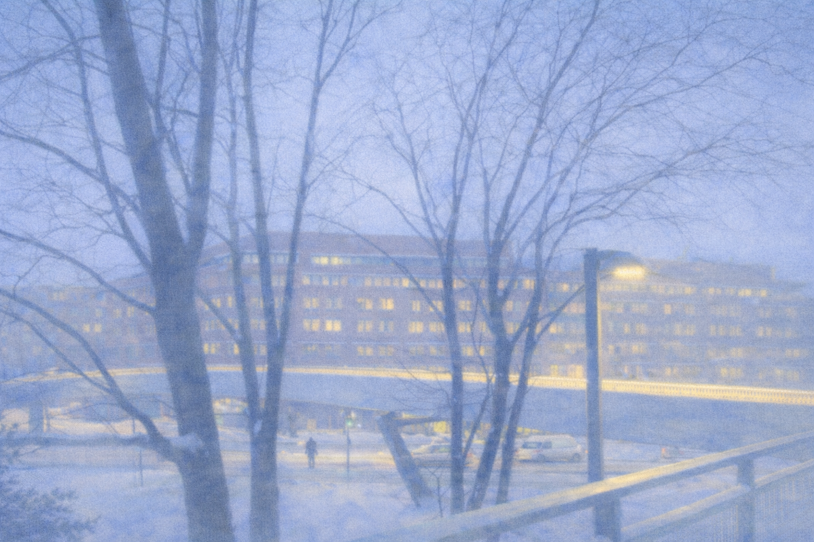
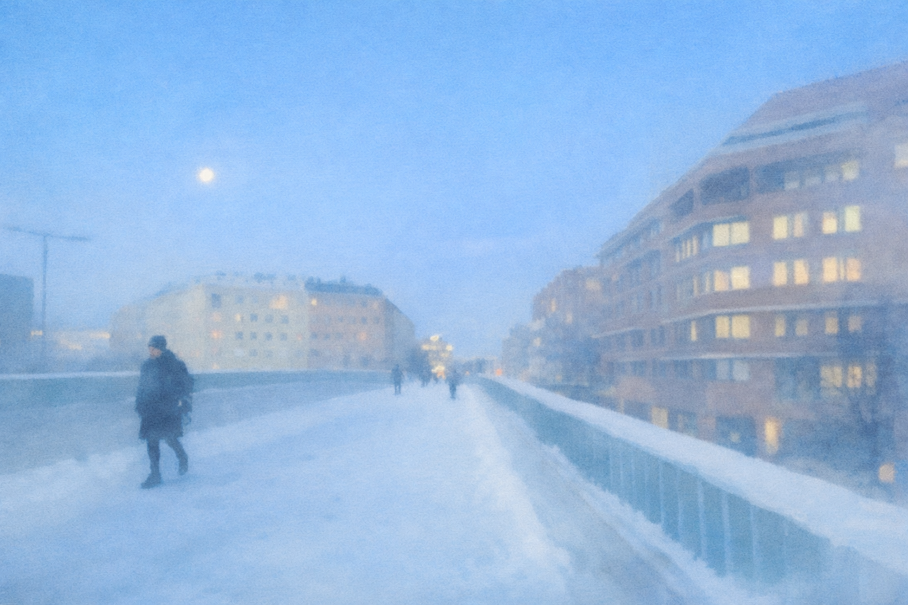
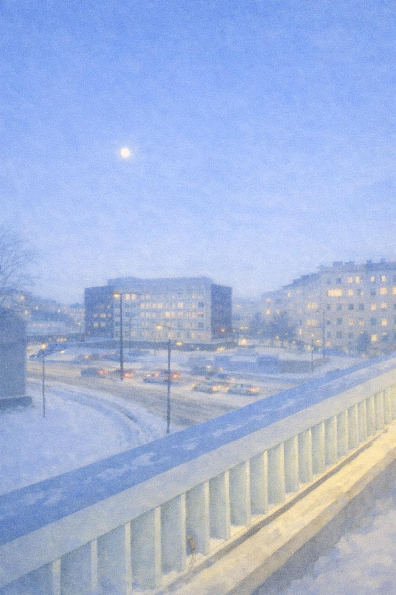
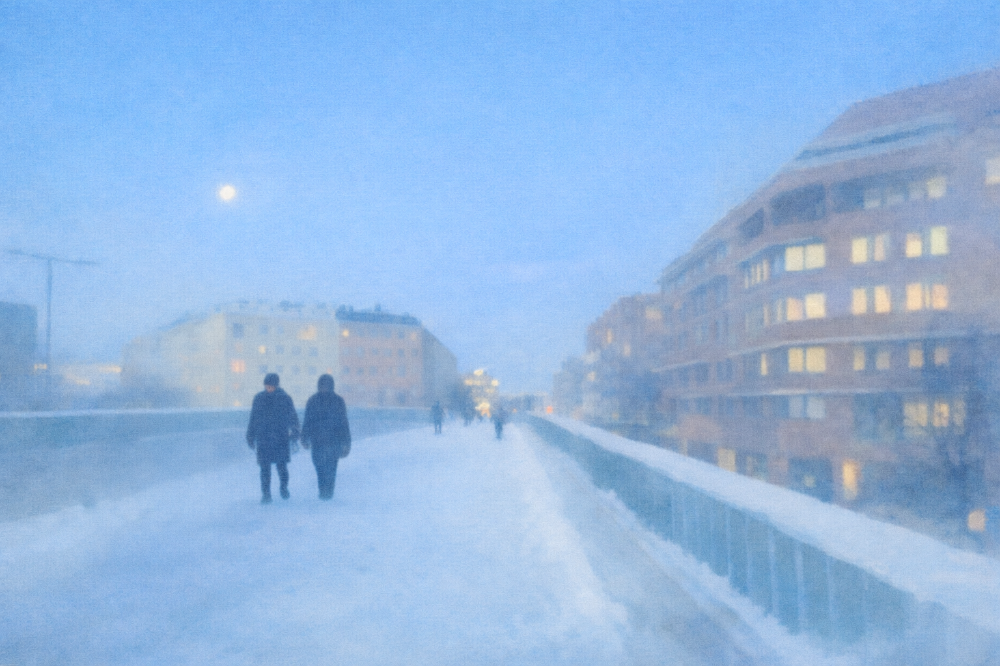
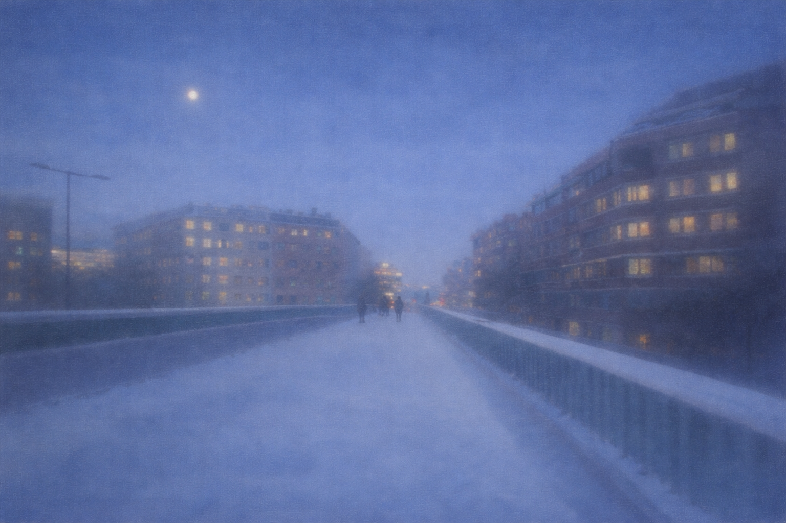

Polar Night
This project was inspired by a scene that I saw - From the early morning time I walk on an overbridge in Helsinki, everything is dark blue without light, the pedestrians wear thick clothes walk on the overbridge passing by me. And everything were covered by snow. I feel this scene has magic, seems like the truth is only under my foot, only the land that I have walked on with my feet is truly real.

☝ move your cursor here




